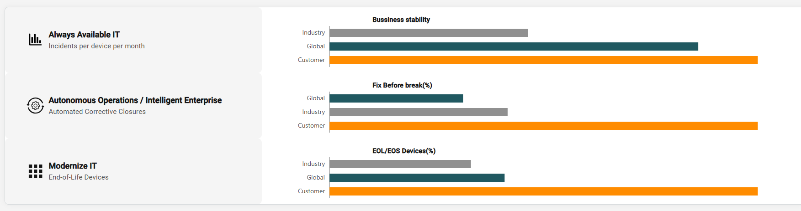
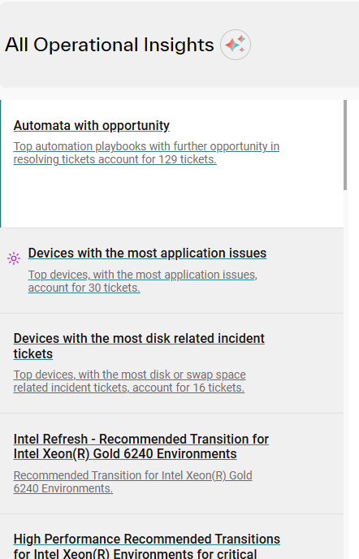
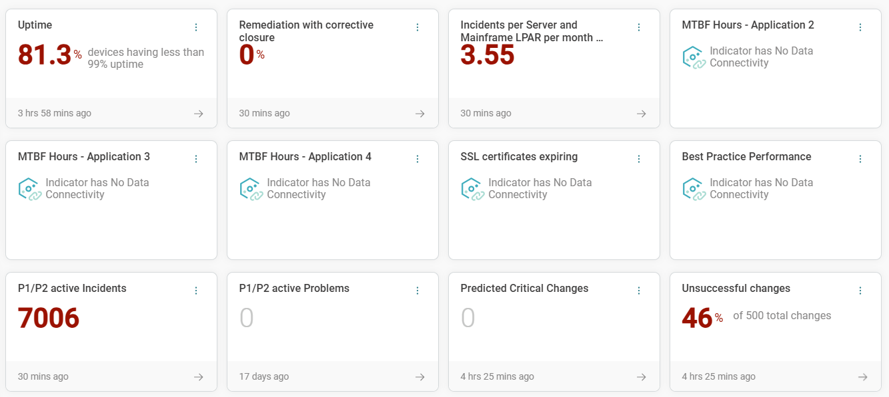
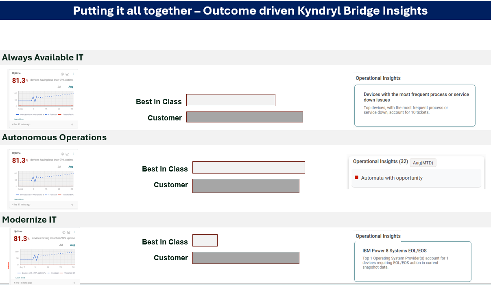
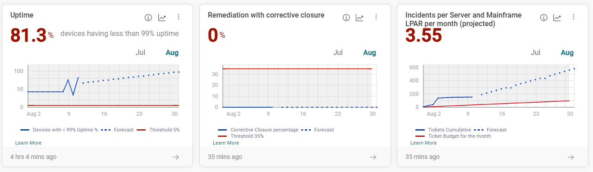

What was provided
- Define high-level dashboard UX principles
- Establish an initial layout and navigation direction
- Identify key components and visualisations
- Conduct collaborative workshops

Enterprise UX · AIOps · ServiceNow · 2026
Turning fragmented operational data into a connected decision-making story
The requirement established an intent, not an experience. The audience, jobs to be done, component relationships, navigation and interaction rules still needed to be defined.
“How might we help ServiceNow customers understand operational health, compare current performance against meaningful benchmarks and identify the most relevant improvement opportunities — without forcing them to interpret disconnected metrics and reports?”
At Kyndryl, the AIO platform was publishing operational insights, health metrics and AI-generated recommendations into ServiceNow. The technical architecture positioned ServiceNow dashboards as the reporting layer for IT managers and operators. Initial assumptions that out-of-the-box dashboards would suffice were replaced by a need for a custom experience — one that connected strategic themes, health evidence, comparative benchmarks and improvement guidance into a single, coherent interface. Operational metrics, AI insights and recommendations were arriving as separate payloads with no agreed presentation model.
Architecture walkthroughs, stakeholder workshops, existing-dashboard review, concept wireframing and iterative design playback — not formal end-user research.
Joined AIO ServiceNow kickoff conversations and reviewed the existing All Operations Insights dashboard to understand what Bridge would send to ServiceNow, what the platform could technically support, and how health metrics, operational insights and recommendations related to each other.
The most important discovery output was not a screen. It was a content model: three strategic focus areas, nine supporting health indicators with current scores and historical trends, three benchmarks for comparative context, and operational insights with recommended directions. The 11 August workshop mapped these explicitly across the three themes.
Reframed the dashboard around a three-step decision sequence — understand current operational health → compare against benchmarks → identify relevant insights. Produced a low-fidelity wireframe to validate this narrative before increasing fidelity, because source data and platform constraints were still being clarified.
A targeted clarification session resolved the two-tab structure (IT Health Indicators as default, Operational Insights as second mode), collapsible focus-area navigation, benchmark labels and ordering, removal of severity labels from insights, dynamic visibility for unavailable data, and scope for first release.
3 focus areasAlways Available IT · Autonomous Operations · Modernised IT
9 health indicatorsCurrent score + historical trend + benchmark comparison
Operational insightsAI-generated recommendations with supporting evidence
Each decision responded directly to a finding from discovery. Finding and decision are presented together.
The dashboard needed a story, not a collection of widgets. The core UX problem was the absence of a relationship between current health, comparative performance and recommended improvement — not the absence of charts.
The initial brief envisioned a collection of dashboard components. Simply arranging health indicators, benchmarks and insights as independent widgets would have reproduced the fragmentation users already experienced across separate reports. The design problem was not the absence of data — it was the absence of a relationship between the data. The dashboard was restructured around a three-step decision flow: understand current operational state → compare performance against benchmarks → identify the relevant operational insight. Every layout decision was evaluated against this sequence.
Strategic focus areas (Always Available IT, Autonomous Operations, Modernised IT) were the clearest top-level organising model — giving users a way to understand why indicators mattered rather than reading nine undifferentiated metrics.
Health monitoring information and analytical improvement guidance were competing for the same space and creating visual noise when shown simultaneously. The design separated these into two primary tabs — IT Health Indicators (default) and Operational Insights — while keeping both within the same conceptual experience. IT Health Indicators was set as the default because users first needed to understand current operational condition before reviewing AI-suggested improvements. The tab model preserved context: switching to Operational Insights retained the selected focus area.
Users could move between monitoring and investigation modes without losing orientation. The two-tab structure reduced cognitive load and clarified the relationship between health evidence and improvement guidance.Benchmarks required explicit comparative semantics. A current score alone explained nothing. The design needed Best in Class, Median and Current Score with consistent ordering and direction-aware colour logic.
A workshop confirmed that operational insights were AI-generated recommendations intended to reduce manual investigation. They were refreshed periodically and represented improvement opportunities — not assigned work records. Early visual treatments that resembled incident cards (severity badges, status colours, assignment fields) created a misinterpretation risk: customers could treat them as a task queue rather than operational guidance. The design removed severity and impact labels, adopted an explanatory title-and-evidence structure, and separated the styling clearly from ServiceNow incident conventions.

Operational insights must not visually resemble incident tickets. Workshop clarification confirmed they are AI-generated analytical recommendations, not work items — and styling them like tickets created misinterpretation risk.
Data availability would vary by customer. The layout could not assume every customer would have every indicator, insight or historical value — dynamic visibility and empty states were required from the start.


The existing ServiceNow implementation showed a grid of disconnected metric cards with no focus-area grouping, no benchmark comparison, and no connection to operational insights. I produced a conceptual wireframe to validate one central idea: that focus areas, health indicators, benchmarks and insights could be brought into a single, connected layout. This wireframe was deliberately low-fidelity — its purpose was to make the narrative structure discussable, not to resolve visual detail.

After the first playback, the health indicator layout was refined to surface trend context alongside each score. Rather than showing a number in isolation, each indicator now included a historical trend chart (Jul → Aug), a forecast line, and threshold markers — allowing users to see not just where they stood but whether performance was improving, declining, or at risk.
The operational insights view was designed to read as analytical guidance, not a work queue. Each insight has a title, a supporting metric count, and a recommended direction — styled to convey explanatory context rather than urgency or assignment. Category filtering was added to allow users to scope insights by operational area without losing their focus-area context.
Converted the requirement into explicit questions about audience, goals, actions and information relationships. Used an early wireframe to make those questions discussable.
Created a state → comparison → insight decision flow that became the shared reference across product, engineering and UX.
Separated UX architecture from final platform styling. Established that initial UX did not need to conform to internal conventions since the implemented dashboard would be aligned to ServiceNow.
Designed a flexible framework for variable metrics and data history. Established dynamic visibility so missing data would not break the layout.
Removed severity badges and assignment affordances after a workshop confirmed insights were AI-generated guidance, not work records. Adopted an explanatory title-and-evidence structure.
Used fast conceptual iterations to validate structure before polishing. Surfaced unresolved decisions through prototypes and working sessions rather than inventing requirements to meet a deadline.
I owned the UX conceptualisation from ambiguous requirement to implementation hand-off. I clarified the product story, structured the information model, facilitated decisions across specialist teams, resolved conflicting platform expectations and created a dashboard framework that connected health, comparison and improvement into one operational narrative.
Evidence-supported only. No time savings, SUS scores or adoption metrics are claimed — the project did not reach that stage of measurement.
Ambiguity is a design problem, not a blocker. The initial brief was not actionable for detailed UX. The right response was to convert the requirement into explicit questions and use an early prototype to make those questions discussable — not to wait for a complete specification that was never going to arrive.
The most important design output was not a screen. It was the content model: three focus areas, nine indicators, three benchmarks and operational insights, mapped into a decision sequence. That structure gave the dashboard its narrative and became the shared reference across product, engineering and UX.
Platform fit is a design question. Applying an internal design system to a ServiceNow-delivered experience would have created visual dissonance for customers who expect ServiceNow conventions. Separating UX architecture from implementation styling was the right call — it let the structure be sound before the visual language was resolved.
Deadline pressure is not permission to invent requirements. Development needed firm designs. The right response was to surface unresolved decisions through rapid prototypes and working sessions — not to fill product and data gaps with assumptions that would have been corrected later at higher cost.
Simplification at the right moment is a senior-level contribution. Deferring unsupported interactions, removing unnecessary severity labels and reducing widget complexity for the first release were not concessions — they were the decisions that made the dashboard deliverable without compromising the core user experience.
Certain names, identifiers, values and implementation details have been anonymised to protect confidential programme and customer information. This case study focuses on the design process, decisions and contribution.

Enterprise UX · AIOps · ServiceNow · 2026
Turning fragmented operational data into a connected decision-making story
The requirement established an intent, not an experience. The audience, jobs to be done, component relationships, navigation and interaction rules still needed to be defined.
The work was to translate an ambiguous request into a coherent dashboard narrative and a decision-ready experience model.
“How might we help ServiceNow customers understand operational health, compare current performance against meaningful benchmarks and identify the most relevant improvement opportunities — without forcing them to interpret disconnected metrics and reports?”
At Kyndryl, the AIO platform was publishing operational insights, health metrics and AI-generated recommendations into ServiceNow. The technical architecture positioned these as separate payloads, so the dashboard risked showing disconnected information without a clear operational narrative.
Architecture walkthroughs, stakeholder workshops, existing-dashboard reviews and concept wireframing helped turn an open brief into a shared content model and decision sequence.
Joined AIO ServiceNow kickoff conversations and reviewed the existing dashboard to understand what Bridge would send to ServiceNow, what the platform could technically support, and how health metrics, insights and recommendations related to one another.
Mapped the work into three strategic focus areas: Always Available IT, Autonomous Operations and Modernised IT. This gave users a way to understand which health indicators mattered and how recommendations connected.
Reframed the dashboard around a three-step decision sequence: understand current operational health, compare against relevant benchmarks, then identify improvement opportunities.
Used targeted sessions to clarify default views, navigation, benchmark semantics, filtering needs and the difference between operational insights and assigned work.
3 focus areasAlways Available IT · Autonomous Operations · Modernised IT
9 health indicatorsCurrent score · Historical trend · Benchmark comparison
50+ operational insightsAI-generated recommendations with supporting evidence
The dashboard needed a story, not a collection of widgets. The core UX problem was the absence of a relationship between current health, comparative performance and recommended improvement.
Structured the experience as a three-step decision sequence: understand current health, compare against relevant benchmarks, then identify improvement opportunities.

Strategic focus areas were the clearest organising model; users needed to see which indicators mattered to their selected theme.
Grouped health indicators and operational insights by focus area so teams could move from a high-level view into the measures and guidance relevant to their work.
Benchmarks required explicit semantics. A current score alone explained nothing.
Made best-in-class, median and current score relationships explicit, with explanatory context that supports interpretation without relying on colour alone.
Operational insights must not visually resemble incident tickets.
Kept AI-generated recommendations visually distinct from assigned work, with supporting evidence and an explanatory narrative.
Data availability varied by customer. The layout could not assume every customer had every indicator, insight or historical value.
Designed for variable data, including dynamic visibility and clear empty or unavailable states.
The existing experience displayed disconnected metric cards without a focus-area grouping, benchmark comparison or clear relationship to operational insights. The first iteration tested a strategic focus model to make the dashboard’s information architecture discussable.
Health indicators were refined to include historical context alongside current score and benchmark range, helping users understand direction rather than a single static number.
Operational insights were presented as AI-generated recommendations supported by evidence, rather than as assigned incidents or tickets.
Translated the requirement into explicit questions about audience, goals, actions and information relationships.
Created a three-step decision flow that connected health metrics, benchmarks, insights and recommendations.
Separated UX architecture from final platform styling so implementation conventions could be resolved independently.
Designed a flexible framework for variable metrics and history, with clear empty states.
Used explanatory evidence and visual distinction to keep AI guidance from being misread as assigned work.
Used fast conceptual iterations, workshops and working sessions to reach hand-off in six weeks.
I owned the UX conceptualisation from ambiguous requirement to implementation hand-off. I clarified the product story, structured the information model, facilitated decisions across specialist teams, resolved conflicting platform expectations and created a dashboard framework that connected health, comparison and improvement into one operational narrative.
Ambiguity is a design problem, not a blocker. Early drafts should make assumptions visible so the team can discuss them.
The most important design output was a decision sequence, not a collection of components.
Platform constraints are design inputs. Separating UX architecture from implementation styling made the structure easier to validate.
Deadline pressure is not permission to invent requirements. Working sessions resolved uncertainty faster than speculative polish.
Certain names, identifiers, values and implementation details have been anonymised to protect confidential programme and customer information. This case study focuses on the design process, decisions and contribution.
AI experience · Operations · ServiceNow
A decision-support experience connecting operational health metrics, AI-generated insights and recommended actions in one place.
Senior Lead UX Designer
AI insights · Health metrics · Operations
Product, engineering and operations teams
Information architecture · Dashboard UX · Recommendations
01Challenge
Operational health metrics, benchmarks and AI-generated recommendations were presented in separate places. Users had to interpret disconnected data and determine which signals mattered before deciding what to do next.
The experience needed to connect health indicators, benchmark context and operational insights while keeping AI recommendations distinct from work items such as incidents or tickets.
Design prompt
How might we make operational health, benchmarks and AI recommendations understandable together, without making insight look like an incident?
02Response
Organise metrics around the operational focus areas teams use to understand performance.
Keep current scores, historical context and comparison ranges together for interpretation.
Present AI-generated guidance as insight with evidence, not as assigned work or ticket severity.